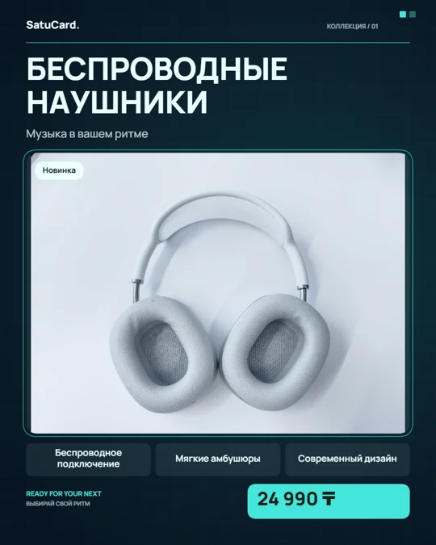

SatuCard
SatuCardЛокальный черновик
Редактор сохраняет изменения в браузере. После перезагрузки нажмите «Восстановить». Очистка данных браузера может удалить черновик.
ОТ ПЕРВОГО ФОТО ДО ГОТОВОЙ КАРТОЧКИ
Ваш товар, ваше оформление. Покажем, где добавить фото, как настроить дизайн и куда сохранить результат.
Начните с демонстрационного товара. Для редактирования и скачивания аккаунт не нужен.

Нет фото под рукой? Выберите один из восьми примеров под областью загрузки: от косметики и обуви до посуды и декора. Выбор примера заменит данные текущего товара; прежнее состояние можно вернуть отменой.

Факты задаёте вы. В «Помощнике текстов · RU / KZ» можно создать локальный шаблон или ИИ-черновик, если владелец подключил сервис. Проверьте каждый факт перед применением. Фото не распознаётся.

«Копия в другом формате» добавит вариант в комплект и сохранит исходную карточку. Отменить правку можно стрелкой вверху или Ctrl/Cmd + Z вне текстового поля.

На верхней панели выберите PNG, JPG или WebP и масштаб 1× или 2×. Файл появится в загрузках браузера. Кнопка «Копировать» помещает PNG в буфер обмена.
PNG, JPG и WebP — готовые изображения. Чтобы позже менять фото, цену и оформление в SatuCard, отдельно сохраните файл проекта.
Редактор сохраняет изменения в браузере. После перезагрузки нажмите «Восстановить». Очистка данных браузера может удалить черновик.
Кнопка в разделе «Файлы проекта» под холстом скачивает .satucard.json с фото и настройками. Для продолжения нажмите «Открыть» и выберите этот файл, в том числе на другом компьютере.
Файл проекта содержит ваши изображения. Храните его как рабочий документ. Для переноса черновика используйте файл проекта.
Ссылка публичная: карточку может открыть любой, у кого она есть. При публикации на сервер отправляется готовое изображение и данные карточки. Редактируемый проект сохраняйте отдельно.
ЕСЛИ ЧТО-ТО НЕПОНЯТНО
Нет. Редактирование и скачивание изображений доступны без аккаунта. Вход нужен для публикации карточки и просмотра своих публикаций в кабинете.
Проверьте формат и размер: JPG, PNG или WebP до 10 МБ. HEIC и SVG не поддерживаются. Сохраните фотографию в JPG или PNG и попробуйте снова.
Проверьте название и цену: сообщение об ошибке появится в редакторе. Посмотрите список загрузок браузера. Для проверки попробуйте PNG в размере 1× и дождитесь завершения подготовки файла.
Публикация сохраняет готовый результат на сервере и даёт ссылку покупателю. Файл .satucard.json сохраняет исходные настройки для будущих правок. Для готовой картинки выберите PNG, JPG или WebP.
Скачайте файл через «Сохранить проект», перенесите его и выберите через «Открыть» в редакторе. Локальный черновик остаётся в исходном браузере. Опубликованные карточки доступны в кабинете после входа.
Используйте стрелку отмены вверху. Ctrl/Cmd + Z работает для настроек, когда курсор находится вне текстового поля. Кнопка сброса возвращает исходный пример; сброс тоже можно отменить.
Однотонный фон можно убрать локально во вкладке «Фото». Для текста есть шаблонный помощник RU/KZ и опциональный ИИ, который владелец включает на сервере. Распознавания товара по фото нет.
Проверьте «Спам» и правильность адреса. На странице входа можно повторно отправить подтверждение. Не создавайте аккаунт на чужую почту. Если письмо не приходит, попробуйте позже или используйте вход с Google.
ТЕПЕРЬ ВАША ОЧЕРЕДЬ
Подсказки проведут по инструментам. Фото, текст и стиль выбираете вы.
Создать карточку с подсказками ↗В «Комплекте» добавьте карточки с деталями или дублируйте текущую. Кнопка ZIP рядом со скачиванием одной карточки сохраняет весь комплект и отчёт проверки. Если проверка найдёт проблему, можно сразу перейти к полю или скачать текущую версию.
В «Облачных проектах» сохраните комплект приватно и откройте его из личного кабинета на другом устройстве. В облако отправляются фото, логотип и настройки. Требуется настройка базы владельцем сайта; автосохранение черновика остаётся локальным.
Удаление однотонного фона находится во вкладке «Фото». Для возврата исходника используйте отмену. Перед маркетплейсом проверьте экспорт; рекомендации не заменяют актуальные правила площадки.